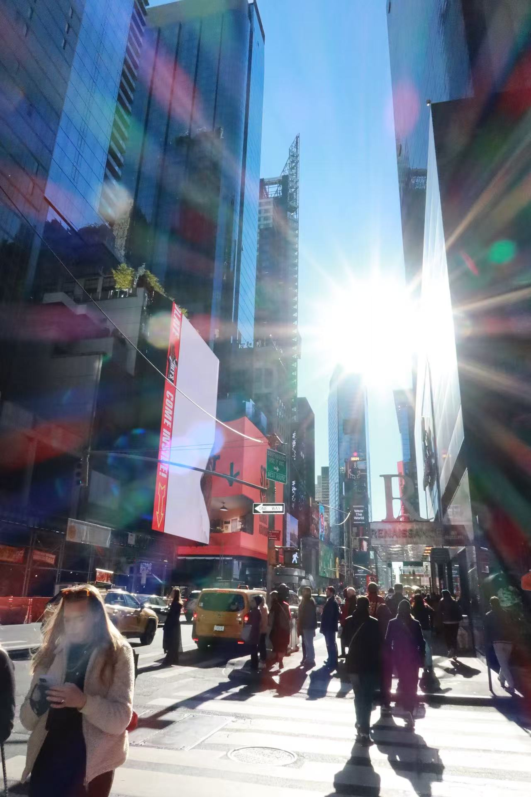

Entry 7: Times Square
Times Square is never quiet. The light bounces from screens to glass to moving cars, folding over itself like reflections that forgot where they started. Crowds shift in layers—commuters cutting through tourists, delivery bikes sliding between both. A bus exhales at the curb, a camera clicks three times in rhythm, and someone’s voice trails off into traffic before it can finish a sentence.
The ads overlap into a single pulse—music loops, slogans blur, bass rolls under the pavement. The air smells like roasted nuts, exhaust, and something metallic from construction nearby. A man tunes his guitar against the constant hum, his chords stretching and catching until they find a space to exist. People pause for a few seconds, nod, and move on again.
Engines idle. Crosswalks tick through their signals. A street performer holds still in silver paint, waiting for the next coin. The sound is never one sound—it’s layers, folding and trading places every second. Shoes, voices, air vents, wheels. Nothing dominates for long.
Somewhere above, a faint drone passes between buildings. The square doesn’t hurry; it repeats. Every few moments, something restarts—a new ad, a laugh, a bus pulling in. The rhythm of this place isn’t about noise; it’s about motion that refuses to stop.